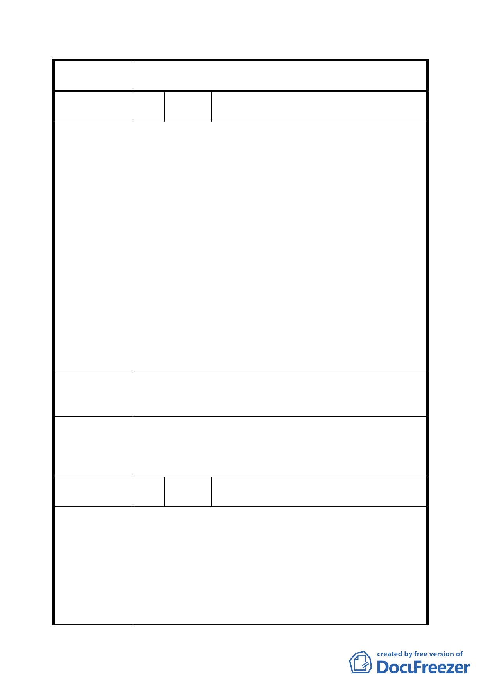

臺北市都市計畫委員會公民或團體所提意見綜理表
案
名
修訂台北市信義計畫地區建築及土地使用分區管
制（增訂容積移入上限）要點案
編
號１
陳情
人
遠雄人壽保險事業股份有限公司
1、信義計畫區在都市計畫之定位係以提供全市金
融及國際觀光發展需求所劃設之重劃區，故其
使用強度及周邊道路服務水準早在原預估影響
範圍，今以此理由限縮容移上限顯有失原計畫
之立意。
2、按目前法令規定，本區申請容積移轉個案皆須
送發展局申請，並經都市設計及土地使用開發
許可審議委員會審查，若申請個案對環境衝擊
陳情理由
過大，委員自然可依相關法令限縮開發總量，
故實無須再增訂條文修正之必要。
3、若市府仍執意推動本案，亦應增訂落日條款，
予地主及業者有足夠緩衝空間因應，不應貿然
實施。不動產之投資其金額相當龐大，規劃與
申請開發亦須相當時日，非三兩日可改變現
狀，為政者自應了解此一原理。否則動則增修
條文皆對當事人影響甚大，故建議增訂自公告
日起 2 年內實施以為緩衝。
關於修訂台北市信義計畫地區建築及土地使用分
建 議 辦 法 區管制（增訂容積移入上限）要點案，建議增訂落
日條款。
本案計畫內容改採在相關法令規定之移入上限
委員會決議
下，本區容積實際可移入總量須經台北市都市設計
及土地使用開發許可審議委員會就個案基地條件
予以審查。
編
號2
陳情
人
台北市建築開發商業同業公會
一、增訂本地區容積移入上限對紓緩交通問題效果
有限，卻對土地開發案影響很大，且未符市府
朝「大眾運輸導向」發展政策：
陳情理由
1、信義計畫區30年來大致已開發完成，所剩未開
發土地可移入容積有限，調降移入容積上限對
該地區交通及環境之影響程度輕微。
2、而從私部門角度觀之，民間依據現行法規評估
土地整體價值進而取得土地，若驟然降低容積
- 15 -